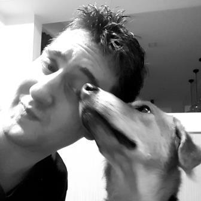

I'm a quantiative behavioural science researcher. I use data about people to answer questions and build models.
I’ve got a PhD in experimental social psychology from
UNC Chapel Hill , and manage the Social and Behavioural Inference group at the Institute of High Performance Computing in Singapore.
My work uses a range of methods. I run experiments and questionnaire-based studies as well as analyzing existing data souces. In terms of statistical techniques, I most commonly use mixed-effects models and (regularized) regression.
Check out my publications here, or grab a copy of my CV here